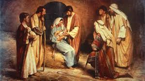

Karácsony a szeretet és az összetartozás ünnepe, amelyet világszerte december 25-én ünnepelnek. Ezen a napon a keresztények Jézus Krisztus születését ünneplik, de a karácsony mára sokkal több lett, mint vallási ünnep. Az emberek ilyenkor összegyűlnek családjukkal és barátaikkal, hogy együtt töltsenek időt, ajándékokat cseréljenek, és finom ételeket fogyasszanak.
A karácsony keresztény ünnepként Jézus Krisztus születésének emlékére jött létre. A Biblia szerint Jézus Betlehemben született, és születését angyalok hirdették meg a pásztoroknak, akik elmentek, hogy tiszteletüket tegyék előtte. A három bölcs, vagy napkeleti bölcsek, csillagot követve érkeztek Betlehembe, hogy ajándékokat adjanak az újszülött Jézusnak.
Azonban a karácsony ünneplése nem kizárólag keresztény eredetű. Az ókori rómaiak például december végén tartották a Saturnalia nevű ünnepet, amely a mezőgazdaság istenének, Saturnusnak állított emléket. Ez az ünnep a fény és a megújulás időszaka volt, amely során az emberek ajándékokat cseréltek és lakomákat rendeztek.
A középkorban a karácsony fokozatosan egyre népszerűbbé vált Európában, és számos helyi szokás és hagyomány kapcsolódott hozzá. A karácsonyfa állítása például a német területekről származik, ahol a fák díszítése a természet megújulását szimbolizálta.
A modern karácsony sok eleme, mint például a Mikulás (Santa Claus) alakja, a 19. században alakult ki. A Mikulás figurája Szent Miklós legendájából ered, aki a 4. században élt és híres volt jótékonyságáról és ajándékozásáról.
A karácsonyfa állítása és díszítése az egyik legismertebb hagyomány. A fát színes fényekkel, díszekkel és szaloncukorral ékesítik, és a csúcsára gyakran csillagot vagy angyalt helyeznek.
Az ajándékozás a karácsony egyik legkedveltebb része. Az emberek ajándékokat cserélnek családtagjaikkal és barátaikkal, hogy kifejezzék szeretetüket és hálájukat.
Az ünnepi asztalra különleges ételek kerülnek, mint például a pulyka, a hal, a bejgli és a mézeskalács. Minden országban más-más hagyományos karácsonyi ételek vannak.
A karácsonyi dalok és énekek hozzájárulnak az ünnepi hangulathoz. Sokan járnak házról házra énekelni, vagy otthon énekelnek családjukkal.
Jézuska alakja is szorosan kapcsolódik a karácsonyhoz. A gyerekek izgatottan várják, hogy a Jézuska elhozza nekik az ajándékokat, amelyeket a karácsonyfa alá helyez.
Pár karácsonyi kép!